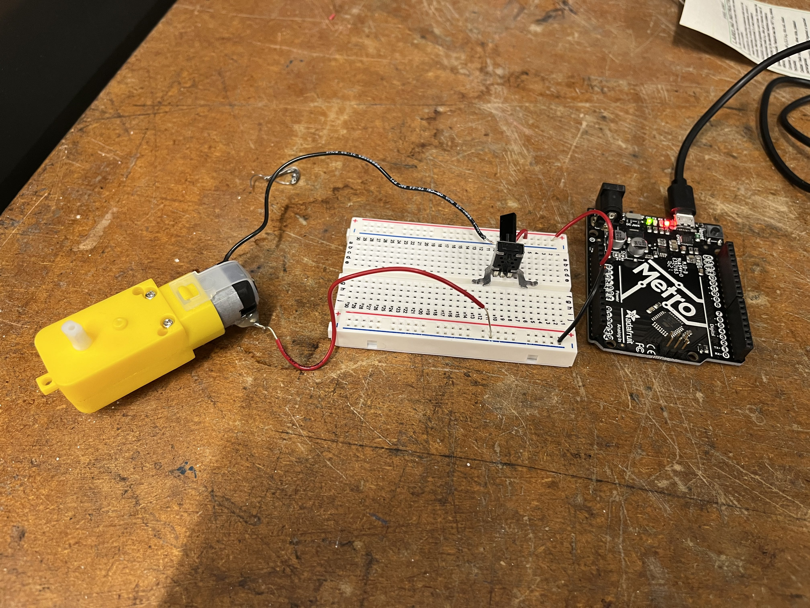

# the final product
# ---------------------------------
i used wood glue to adhere the parts of the sandwich together, left it overnight, and assembled it. here is the final product:

/week 3: kinetic sculpture
# the concept
# ---------------------------------
for my final project, i plan on creating a knock-activated door opener. for this week's project, then, i figured i'd create a mechanism that — using the small motor — could wind and unwind a string (that will, eventually, be attached to a door handle to pull it open)
# the mechanism
# ---------------------------------
i first created a gear whose center hole was shaped like the motor attachment so that it could fit snugly. i measured the width of the flat edges, as well as the radius of the circle, and created a rectangle inside to account for both dimensions:
my ultimate laser cutted version was a little loose, so i reduced the dimensions for the final product"
i then had to create a larger gear to translate the high speed of the smaller gear into stronger power. i kept the same module settings, but increased the number of teeth. and for the hole size, i matched it with the diameter of the wooden dowel.
i then laser cut a smaller circle, and then a larger circle. the larger circle and the large gear would be like two pieces of bread, and the smaller circle would be in the middle. the plan was for the string to wind around this smaller middle portion.
unfortunately, i soon realized that i would need to drill a hole through this center portion in order to securely attach the string. given how thin this center portion was, as well as the fact that i had already glued the three pieces together, i realized that i would have to recut each piece.
this is the new middle part of the sandwich. the big hole is for the dowel, and the smaller non intersecting hole is for the string to thread through:
and this is the new sandwich. this, in addition to the smaller gear, concludes all of the components.
# casing
# ---------------------------------
the motor, microcontroller, and breadboard take up a lot of space, and the loose wiring was bothering me, so i decided to print some press-fit casing for each of the objects, which, assembled, looks like this:
# circuitry
# ---------------------------------
i created the circuit using the breadboard, microcontroller, and by adding a potentiometer to be able to control the speed of the motor:
i then used the multimeter to measure the voltage across the circuit when the potentiometer was turned to the least resistance:
and then again to measure the voltage after the resistance was increased as much as possible while still maintaining motion in the motor.
# the final product
# ---------------------------------
i used wood glue to adhere the parts of the sandwich together, left it overnight, and assembled it. here is the final product: